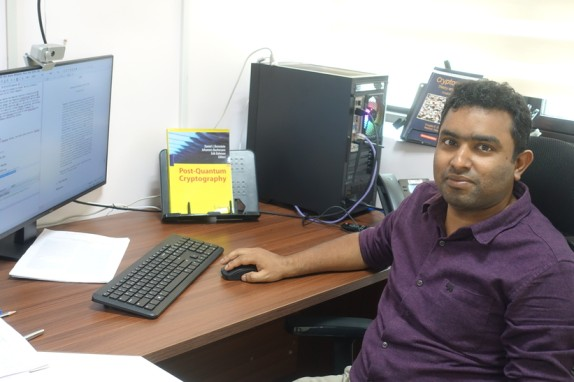

About Me
Welcome to my webpage! I am an Applied Cryptography Researcher.
I received my Ph.D. in Computer Science with a specialization in
Searchable Encryption. My research revolves around
post-quantum cryptography, searchable encryption,
secure cloud computing, privacy-preserving systems, and
blockchain security. Through the Quantum-Resilient Applied Cryptography (QuRAC) Research Group, I lead research on
quantum-resilient cryptographic systems, privacy-enhancing technologies, and secure computing solutions for next-generation applications.
In simple terms, I spend a lot of time thinking about how to keep data secure while still making it useful.
When I am not proving security theorems or chasing elusive bugs, you will probably find me teaching, discussing research with students, writing code that works on the third attempt, or wondering why a proof looked much simpler yesterday. I enjoy exploring new technologies, reading about computer science, playing badminton, travelling, and occasionally explaining to my computer that the proof is correct even if the implementation disagrees. If you share an interest in cryptography, security, or simply enjoy solving challenging problems, feel free to get in touch!



Assistant Professor
School of Data Science
IISER Thiruvananthapuram
Latest News
- Paper titled "Efficient and Post-Quantum Conjunctive Dynamic SSE with Strong Privacy Guarantees" accepted at PKC 2026.
- Delivered an invited talk on "Mitigating Randao Manipulation: Is VDF the Missing Link?" at Crypto Winter School (CWS) 2025, IIT Bhilai.
- Delivered a talk on "From Classical to Quantum Cryptography: The Next Leap in Secure Communication" at Tathva's 25 Annual Techno-Management Fest, NIT Calicut,
Sometimes it is the people no one can imagine anything of who do the things no one can imagine.